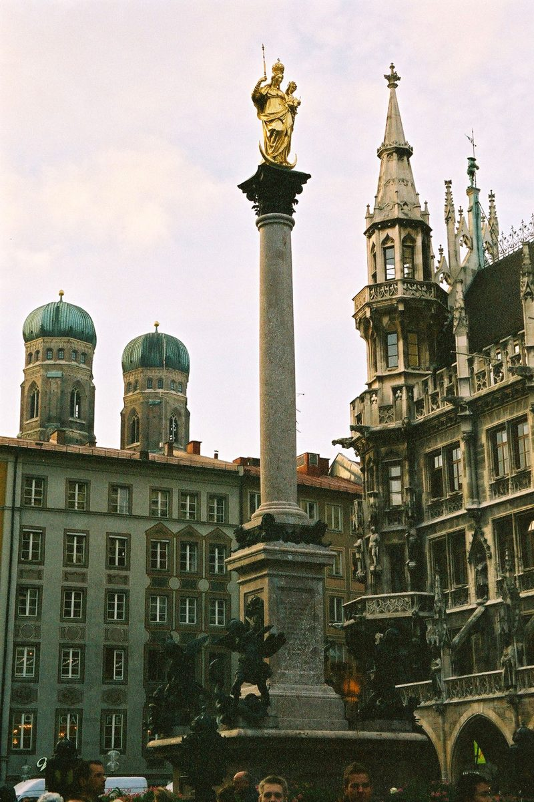

Découvrir le Marienplatz de Munich : Guide Essentiel pour les Voyageurs

Le Marienplatz est le cœur battant de Munich, une destination incontournable pour tout voyageur visitant cette ville allemande riche en histoire et en culture. Nichée au centre de la ville, cette place emblématique offre un mélange parfait d'histoire, d'architecture et de vie moderne. Voici un guide complet pour vous aider à explorer le Marienplatz comme un local.
Comment se rendre au Marienplatz ?
Le Marienplatz est facilement accessible grâce à l'excellent réseau de transports en commun de Munich. Si vous arrivez en train, la gare centrale de Munich (Hauptbahnhof) est à seulement quelques minutes en métro ou en tramway. De nombreux bus desservent également la place. Si vous préférez marcher, c'est une agréable promenade depuis le centre-ville. Pour ceux qui viennent en voiture, des parkings souterrains sont disponibles à proximité.
Quelle est la meilleure période pour visiter le Marienplatz ?
Le Marienplatz est animé toute l'année, mais chaque saison offre une expérience unique. En été, vous pouvez profiter des terrasses et des festivals en plein air. L'hiver, surtout pendant le marché de Noël, la place se transforme en un véritable conte de fées avec ses lumières et ses décorations. Le printemps et l'automne sont moins fréquentés, offrant une atmosphère plus tranquille pour explorer.
Les 5 incontournables du Marienplatz
1. **La Nouvelle Mairie (Neues Rathaus)** : Cette magnifique structure néo-gothique est le point focal du Marienplatz. Ne manquez pas l'horloge Glockenspiel qui s'anime plusieurs fois par jour avec ses figurines en mouvement.
2. **L'Église Saint-Pierre (Peterskirche)** : Montez les 300 marches de cette église pour profiter d'une vue panoramique sur Munich.
3. **Le Marché aux Victuailles (Viktualienmarkt)** : Situé à quelques pas du Marienplatz, ce marché propose une variété de produits locaux, de la bière artisanale aux délices culinaires.
4. **La Colonne de Marie (Mariensäule)** : Érigée en 1638, cette colonne symbolise la gratitude de la ville pour avoir été épargnée pendant la guerre de Trente Ans.
5. **Les Galeries Commerciales** : Explorez les boutiques et les galeries environnantes pour trouver des souvenirs uniques.
Où manger autour du Marienplatz ?
Le Marienplatz regorge de bonnes adresses pour se restaurer. Pour une expérience authentique, essayez les délicieuses spécialités bavaroises comme les pretzels, les saucisses et les knödels dans une brasserie traditionnelle. Les cafés autour de la place sont également parfaits pour une pause gourmande. Ne manquez pas de goûter à la bière locale, une véritable institution à Munich.
Conseils pratiques
- Portez des chaussures confortables, car il y a beaucoup à explorer à pied.
- Gardez un œil sur vos affaires, surtout dans les zones très fréquentées.
- Prenez le temps de vous asseoir sur un banc et d'observer l'ambiance animée de la place.
- Si vous visitez pendant le marché de Noël, arrivez tôt pour éviter la foule.
Le Marienplatz est sans aucun doute l'une des destinations les plus charmantes de Munich. Avec ce guide en poche, vous êtes prêt à explorer cette place historique et à créer des souvenirs inoubliables.
Haiktec
- Guide Pratique du Freelance: 7 Étapes pour Organiser et Booster Votre Activité
- Planificateur de Budget de Mariage & Suivi des Dépenses 2026
- Économiser Sans Stress : 7 Stratégies Simples pour Mieux Gérer Vos Finances Personnelles
Text mit KI erstellt und automatisch geprueft.